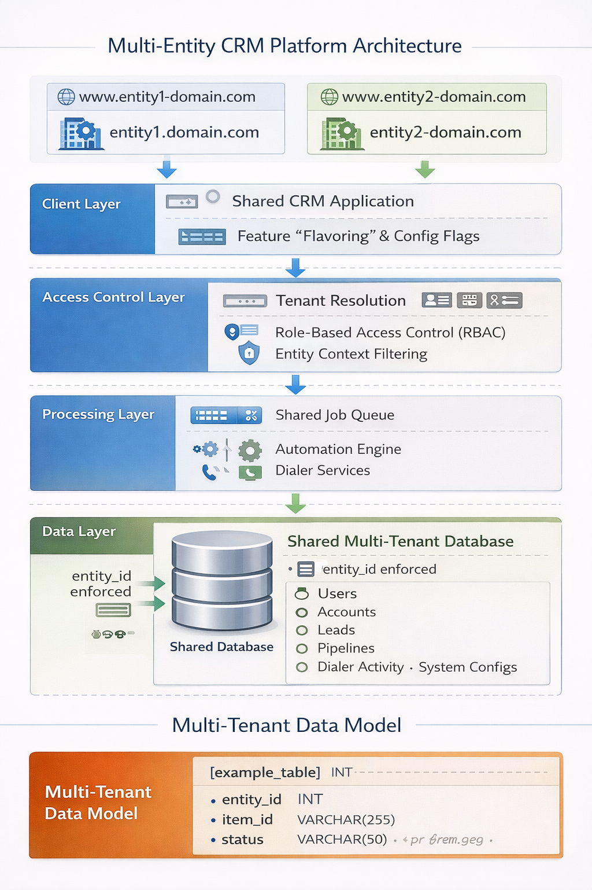

Wholesale Real Estate Joint Venture · Platform Architecture
Collaboratively designing a multi-tenant data architecture that enabled two independent operating companies to share a single CRM platform with full data isolation — delivering a cash-strapped startup access to sophisticated operational infrastructure without building from scratch.
The Business Context
When Golden Key Marketing Group was established as a joint venture, the engineering team and I forked the existing CRM platform and built a full clone on distinct infrastructure — a clean copy of the original architecture configured for the new wholesale real estate operation.
A year later a second startup entered the picture. A new operating company within the same ownership group needed a CRM to support its growing outbound sales operation. The ownership group faced a straightforward constraint: they needed sophisticated software but didn't have the budget to build or license an independent technology stack. Off-the-shelf software and spreadsheets had carried them to this point. They weren't going to carry them further.
The obvious solution — another full infrastructure clone — was off the table on cost grounds. But simply adding the new entity to the existing CRM wasn't viable either. The two businesses had distinct workflows, separate sales teams, independent operational processes, and no business reason to share visibility into each other's data. Running them on the same single-entity instance would have created workflow crossover and operational chaos.
My Role
I was part of the initial discussion alongside the CTO and lead engineer where we worked through the architectural options together. My contribution was understanding the business requirements of both entities, translating the technical tradeoffs into terms the ownership group could evaluate, and securing buy-in for the direction we chose. Once the decision was made I owned the product definition, oversaw the rollout, and assisted with QA. The engineering implementation was a collaborative effort — I don't claim to have independently architected the solution, but the business logic, requirements definition, and stakeholder alignment were mine to own.
The Approach
Evaluating the options. We considered three paths. Independent infrastructure for each entity was the cleanest separation but duplicated costs the business couldn't justify. Scaled-down isolated instances reduced cost somewhat but still fragmented the development effort. The multi-tenant architecture — a single shared platform with entity-level data isolation — preserved development efficiency, eliminated infrastructure duplication, and allowed both entities to benefit from future platform investment simultaneously.
The multi-tenant path had one compelling additional argument: the second entity specifically wanted access to the custom outbound dialer software and the telemetry and reporting infrastructure already built into the platform. Those weren't commodity capabilities — they represented significant prior investment. The shared architecture let the new entity leverage that investment immediately without bearing its cost.
The architecture. The solution centered on introducing entity_id as a scoping attribute across core business tables — users, accounts, leads, pipelines, dialer activity, and system configurations. Application queries enforced entity-level filtering so that users operating within a given entity context saw only records belonging to their entity. The same deployed codebase and backend services supported both entities, with tenant resolution handled at the access control layer based on the domain through which users accessed the system. We internally called the combined system Goldenstone.
Feature flavoring. Operational differences between the two businesses required behavioral separation at the application layer. We introduced entity-specific configuration capabilities through feature flags and configuration tables — allowing dialer disposition sets, workflow behavior, and UI elements to vary by entity without maintaining separate product versions. Each business unit maintained its own operational workflows while running on shared infrastructure.
Shared services with entity-specific configuration. Background processing, automation jobs, and external integrations were implemented as shared services but configured with entity-specific credentials and settings. Each entity maintained independent operational integrations while the underlying platform capability was built and maintained once.
Multi-Entity CRM Platform Architecture

Full platform architecture showing entity-level isolation design — domain-based tenant resolution at the client layer, feature flavoring and config flags, access control layer with RBAC and entity context filtering, shared job queue and automation engine at the processing layer, and a shared multi-tenant database with entity_id enforced across all core tables.
The Outcome
The platform successfully supported both entities in simultaneous operation on shared infrastructure that cost an estimated $2,000 to $3,000 per month less than maintaining independent deployments. The second entity gained immediate access to a sophisticated outbound dialer, robust telemetry, and a reporting infrastructure that would have taken significant time and capital to build independently. The development timeline was short — a meaningful benefit of the shared architecture approach — and operationally both entities ran cleanly on the platform.
The more important outcome was architectural: the platform evolved from a single-entity CRM into a genuine multi-tenant data platform capable of onboarding new operating companies without infrastructure rebuild.
What I'd Do Differently
The cross-entity administrative access model didn't work as well in practice as it did on paper. The intent was to give administrators convenient visibility across both entities from a single login. What we didn't anticipate well enough was the session management complexity — an administrator with an active session in one entity who then authenticated into the other entity created conflicts that required force-ending the existing session. This became operationally confusing and undermined the convenience the feature was supposed to provide.
In hindsight I would have required distinct administrative accounts per entity from the start and built cross-entity reporting as a separate administrative view rather than blurring the session boundary. Convenience features that introduce operational confusion aren't convenient. The cleaner separation would have been worth the small additional friction at login.
Let's Talk
I'm currently exploring Senior Product Manager opportunities in platform, data systems, and operational automation — remote, nationwide.
Connect on LinkedIn →